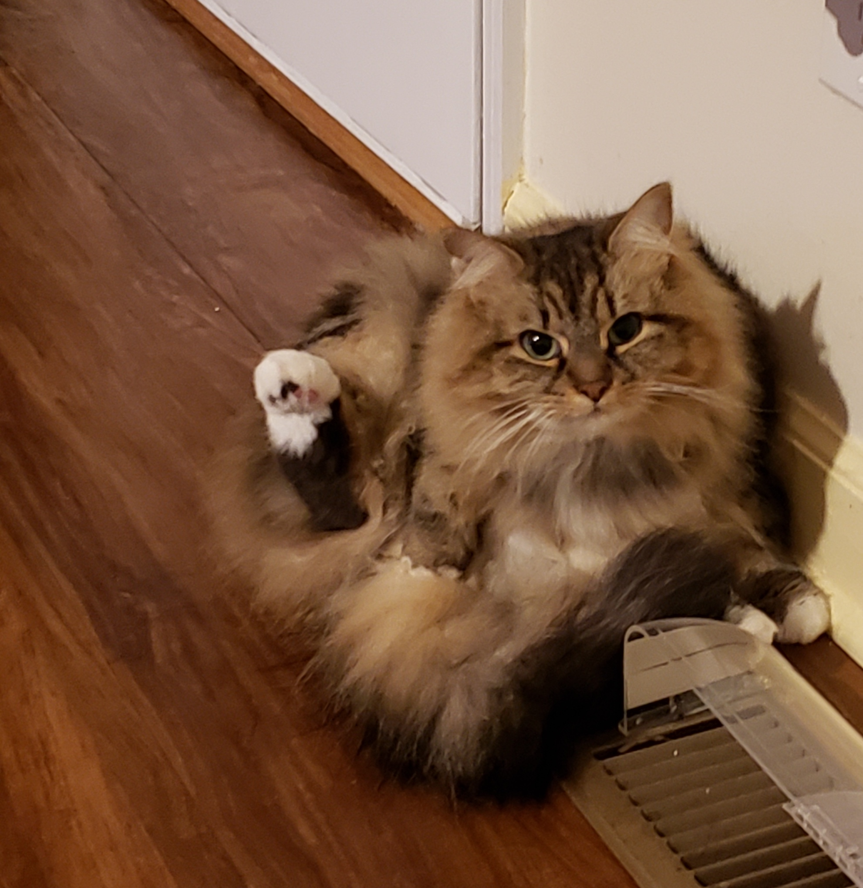

A bit more about myself
I moved to the US from India at a young age and have spent most of my time in Georgia.
I completed my High School here where I was the Valedictorian of my graduating class.
I have always been interested in Economics, which is why I decided to pursue it for my undergraduate major at UGA.
After graduating I applied to the MSA program at Tech because I wanted to combine my theoretical knowledge about
Economics with the practical skills of a Data Scientist.
If you are a Georgia native, you likely know about the UGA and Georgia Tech rivalry. If you are wondering,
yes, I do often feel torn about which school to support during game day. You may have noticed the split color
theme of this site, where parts of it seem to be UGA colors (red and black), while others are Tech colors (black and gold).
Hobbies, Interests, Etc.
I used to (poorly) play tennis in high school, then racquetball in college with friends.
I haven't done either in a while though, but I would like to get back into racquetball.
Lately, I have also gotten into wood working. I have built some planters, some shelves, a little paper
towel holder, and I am refinishing an old wine cabinet. I won't include any pictures of them online
because they are all very ugly and will bring shame to my family. I have also collected an embarrassing amount of tools
with the expectation that I will continue the hobby. Hopefully, I can...CARVE OUT...some time
to improve my skills
I also have a cat who is very cute in person, but really doesn't photograph well.
I'm not sure what breed she is, but she looks like a Maine Coon/Tabby mix and she is about
four or five years old.

If you're wondering about the background image on the home page, it's some type of jumbo Sea Snail.
I took the picture at the Georgia Aquarium.